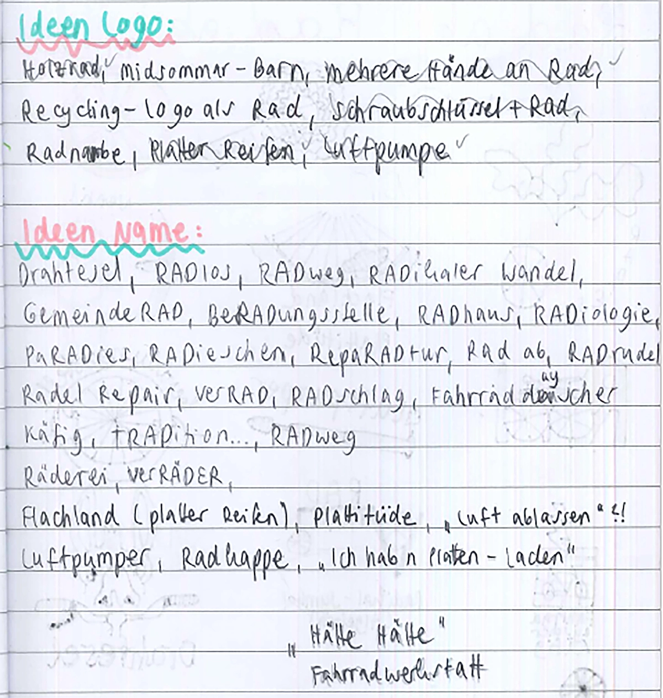
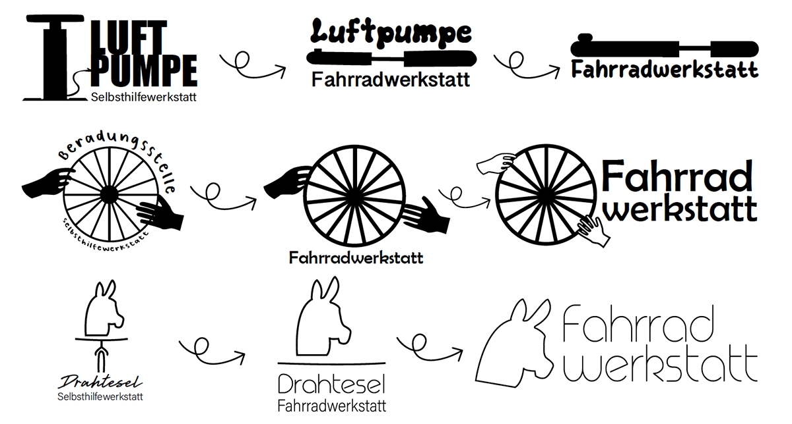
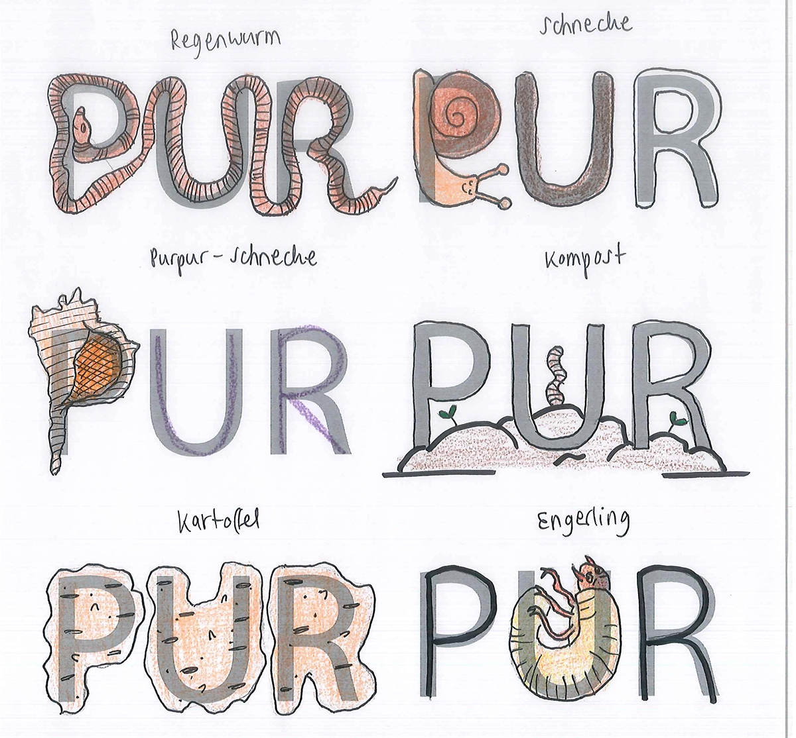
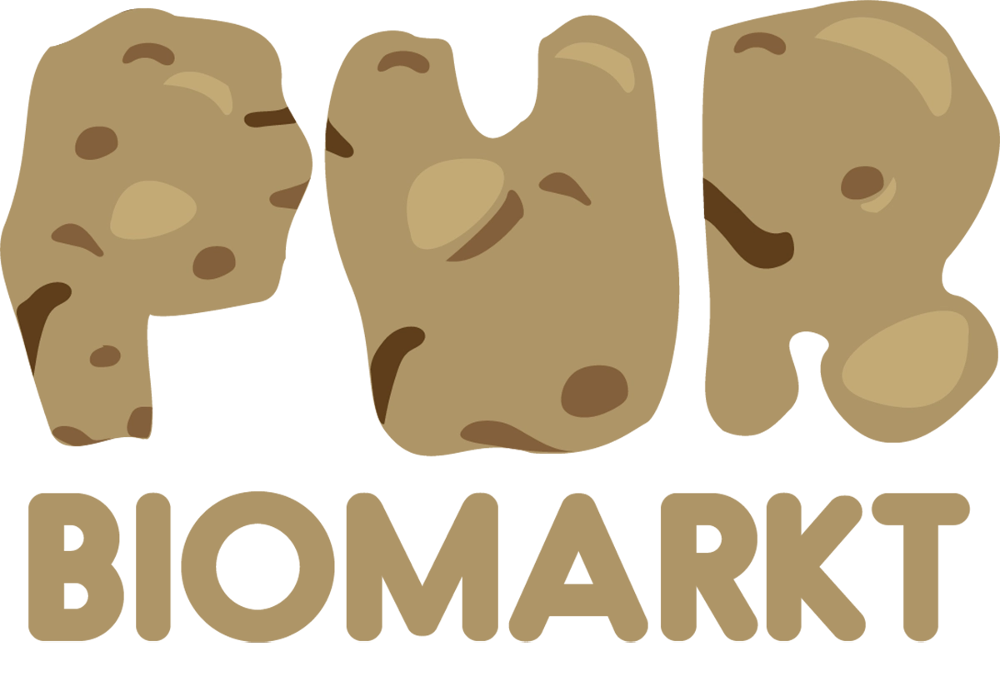
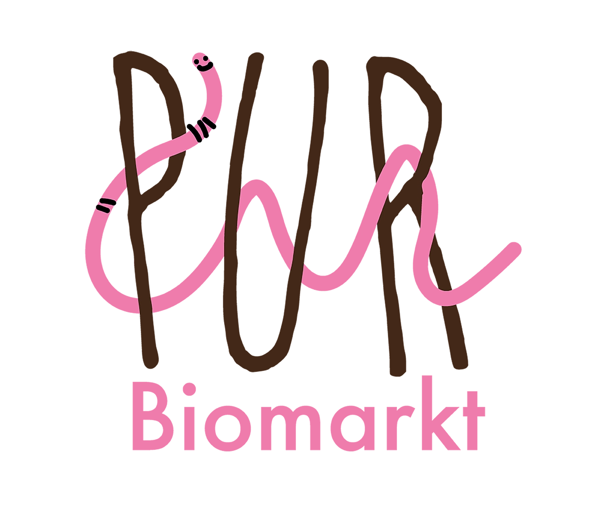

Hier seht ihr einige Logos, die im Rahmen diverser Projekte entstanden sind.
Logos

Am liebsten greife ich für die erste Ideenfindung zu Stift & Papier. Hier ein kleiner Einblick in meinen Brainstorming-Prozess für die Namensfindung einer fiktiven Fahrradwerkstatt. Ich habe ein Faible für Copywriting - und Puns ;)

Hier seht ihr die ersten Logoentwürfe. Die Haupt-Zielgruppe sind Kinder & Jugendliche.

Diese 3 Entwürfe wurden ausgearbeitet und "auf's Wesentliche reduziert".

Hier ging es um das Logodesign für einen fiktiven Biomarkt "PUR". Auch hier habe ich meine ersten Ideen auf Papier umgesetzt.

Einmal Entwurf "Kartoffel"...

... und einmal die Variante "Regenwurm".